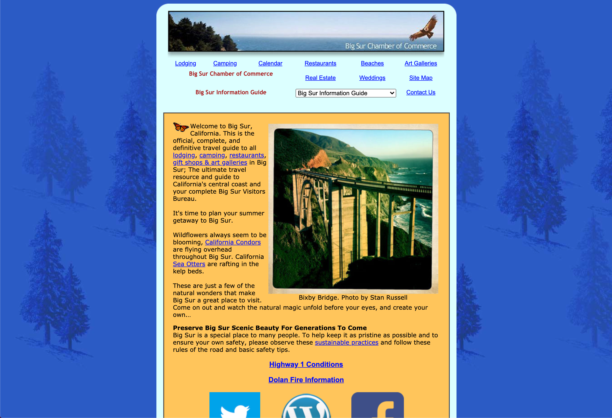
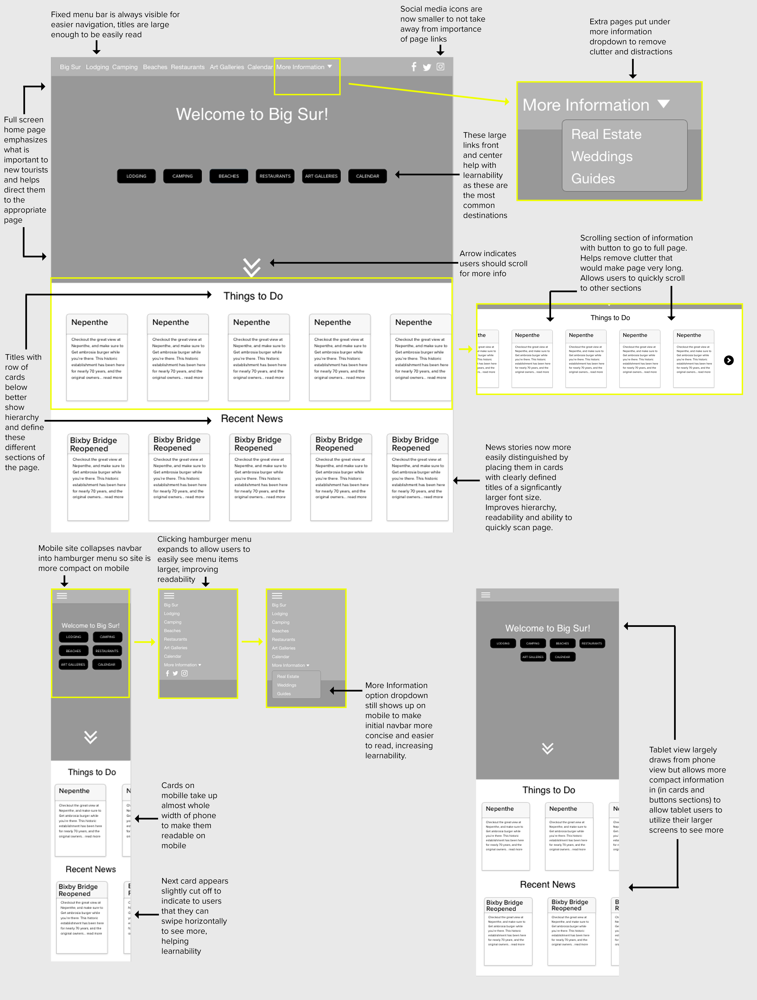
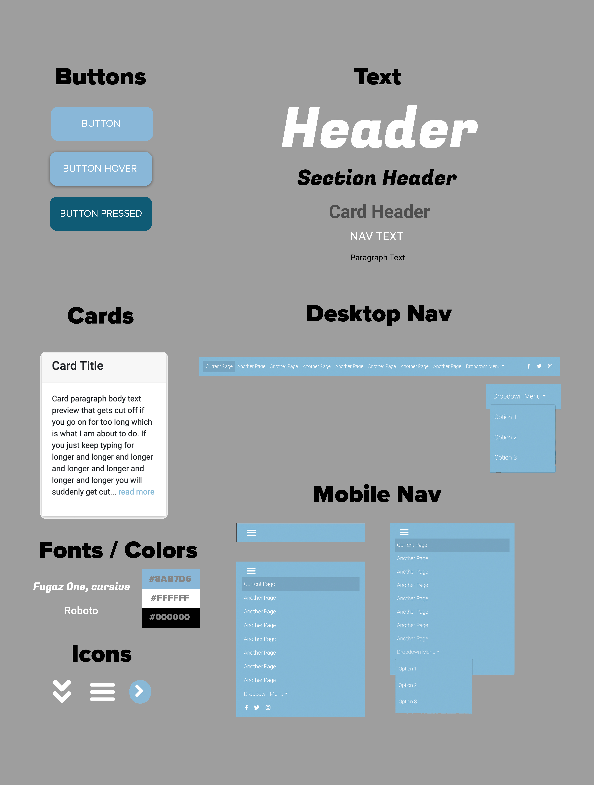

Introduction
In this project I've set out to learn how redesign an existing website in order to better its memorability, learnability, and memorability. I chose Big Sur California's tourism website. First I started by analyzing the existing issues with the site and then sketched out low-fi and high-fi prototypes of a new design to address these issues. Then I finished by putting together this new responsive site and utilizing a style guide.
The Website: Big Sur
Big Sur California is famous for views, trails, and beaches and takes in many toursists each year. This website is intended to give tourists quick information about what they can do and where they can stay in Big Sur.
Problems
- In general, the site faces a major lack of hierarchy which hurts its learnability and efficiency as it takes the user some looking around to figure out what is important and where to go.
- The font and colors of the text are too homogenous which makes differentiating hierarchy too difficult
- Some of the biggest elements on the page (which therefore seem the most important) are social media links that are not important to users trying to get quick information
- Page navigation has a confusing large dropdown listing tons of pages instead of grouping them in a more helpful and less overwhelming way.
- Currently there is a lack of much layout, this makes it tricky to know where to go on the page to find what you are looking for
- On mobile the website doesn't do much resizing and everything becomes unreadibly small and tall
- On tablets the site doesn't effectively use the width of the screen and buttons/links can be small for use with a touch screen.
Accessibility Issues
- The language isn't specified
- There are some empty links on the page
- Some fields are missing labels
- Some very long text or extra long descriptions
Low-Fidelity Wireframe
After identifying the issues with the existing site that I outlined above I got to work on ideas for a new design to overcome these issues. I also designed the new site to work great on phone and tablets as well as desktop. The outcome is these 3 low fidelity wireframes that I belive outline a better interface for the site. These wireframes are interactive! Try clicking on menus and scrolling!
Wireframe Annotations
Below I've annotated various parts of my low-fidelity wireframe to clearly my choices and how I believe each part of this design improves on the sites learnability, memorability, and efficiency.
High-Fidelity Prototyping
Using my low-fidelity wireframe I crafted desktop, tablet, and phone prototypes of the site in Adobe XD to show in detail how the page would translate to these different interfaces. I also figured out how this page could be translated into responsive HTML. These high fidelity prototypes are interactive! Try clicking on menus and scrolling!
Prototype Annotations
Below I've annotated various parts of my high-fidelity prototypes to clearly explain how we can convert these prototypes into functional HTML.

Visual Design Style Guide
Before finally getting into building the site, I made a visual design style guide to clearly layout the interaction states, fonts, and colors for the site. This should be referred to as a guide when building the final site.
Responsive Redesign
Finally, I built the redesigned site! Check it out below and make sure to check it out in mobile and tablet views as well!